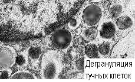
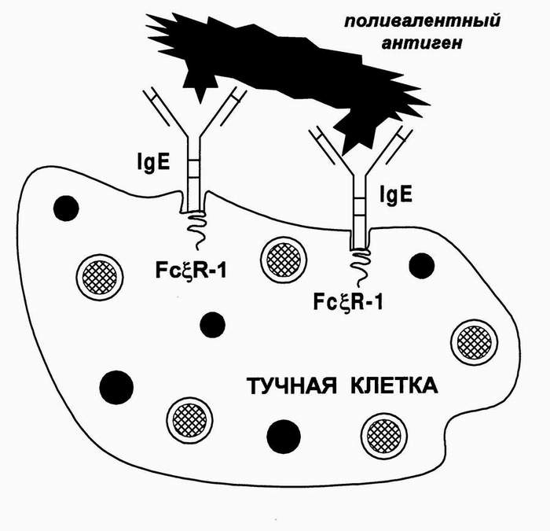
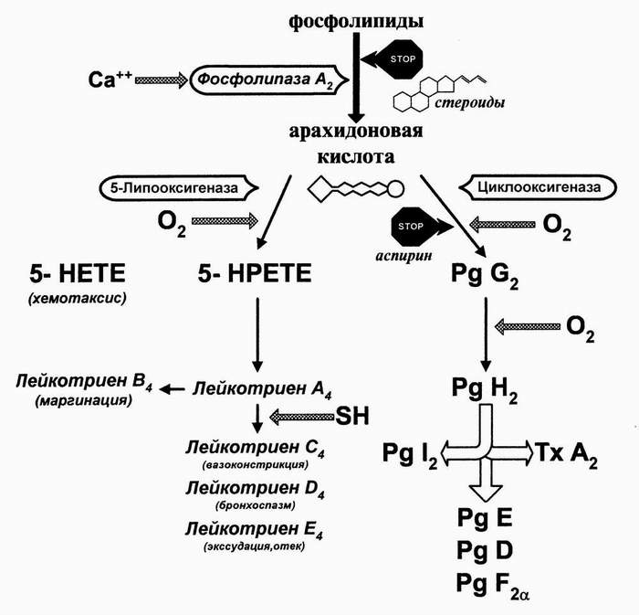

Дегрануляция клеток, сенсибилизированных реагинами


1. Две рядом лежащие молекулы Ig E на поверхности мастоцита связываются двумя эпитопами молекулы поливалентного аллергена (рис. 92). В молекуле иммуноглобулина открывается ранее скрытый “тканеактивирующий центр” (Д.Стэнуорт, 1971) Этот процесс через цитоплазматический хвост FcRI - рецептора активирует молекулу - предшественник серинэстеразы. Серинэстераза запускает цепь реакций, в результате которых образуется фосфатидилхолин.
2. В то же время мембрана мастоцита становится проницаемой для ионов кальция (Са++), которые, проходя плазматическую мембрану (ПМ), активируют фосфолипазу А2. Фосфолипаза А2 запускает дальнейший метаболизм фосфатидилхолина до лизофосфатидил - холина и арахидоновой кислоты.
3. Арахидоновая кислота, образовавшаяся в нарушенной ПМ, претерпевает дальнейшее превращение по двум основным путям:
простагландиновому (при активации циклооксигеназы);
лейкотриеновому (при активации липооксигеназы).

Перекрестное связывание реагиновых рецепторов и координированный эффект кальциевого и липономного пострецепторных посредников вызывают изменение соотношения цАМФ/цГМФ в сторону снижения и циклонуклеотид-зависимую активацию протеинкиназы А с параллельной фосфатидилинозитолзависимой активацией протеинкиназы С. Вследствие этих событий увеличивается концентрация кальция в цитозоле, что запускает кальмодулинчувствительную протеинкиназу.
Совокупное действие вышеназванных протеинкиназ приводит к фосфорилированию и активации цитозольного белка Р и родственных ему белков семейства кальэлектринов. Данные белки служат фъюзогенами, расплавляющими перигранулярные мембраны и обеспечивающими слияние гранул с медиаторами в крупные вакуоли.
Параллельно этому, ионы кальция, попадая в цитоплазму, индуцируют сокращение микрофиламентов, реорганизацию микротрубочек; гранулы и вакуоли клетки начинают движение к плазматической мембране, под влиянием фъюзогенов плазматическая и перивакуольные мембраны сливаются и содержимое выделяется во внеклеточное пространство.
Сложность внутриклеточного посредникового механизма, с одной стороны, создает возможности для неспецифической десенсибилизации путем фармакологической блокады дегрануляции в разных точках. Так, интал (натрия хромогликат) действует, как блокатор повышения внутриклеточной концентрации кальция, теофиллин влияет на цАМФ-зависимую часть механизма и т.д. Однако, с другой стороны, из-за дублирования и перекрывания посредниковых эффектов, как правило, ни один из неспецифических блокаторов не в состоянии радикально снять весь эффект (принцип эквифинальности).
|
|
|
|
|
|